来源：https://aw5opbxom0o.feishu.cn/docx/QpkmdUS8foDH5KxdB5RcGL17nNd
圈友们好，非常荣幸受到生财邀请，分享下山姆代购这个小而美的项目。
这也是我第一次在生财发帖，感谢生财同事对这篇帖子的撰写支持~
先做下自我介绍：
我主业是做传统电商，一直做了有 8 年。21 年受疫情影响主业业绩下滑严重，就出来自己创业尝试其他项目，尝试了很多，也参加了很多期航海。
后来在小区群里关注到，很多人对山姆代购有需求，要么是不愿意开会员的，要么是开了会员嫌量大想拼单的，会在群里问“能不能拼单”之类。当时觉得这个门槛也比较低，就去尝试了。
我自己做的规模比较小，模式就是：
通过小区摆摊拉群获取流量，经营着 300 人的微信群，日常也不怎么维护，就接接龙，或者有需求他们也会私聊我，几乎属于“躺着赚钱”，现在主要是我老婆在操作维护。
小区摆摊：
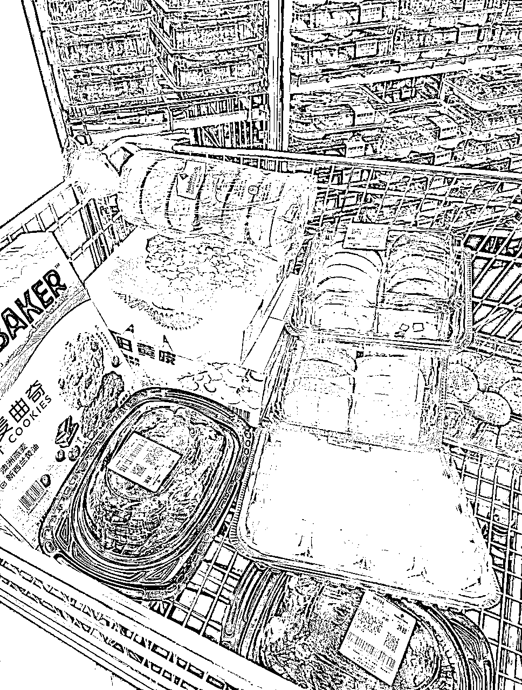
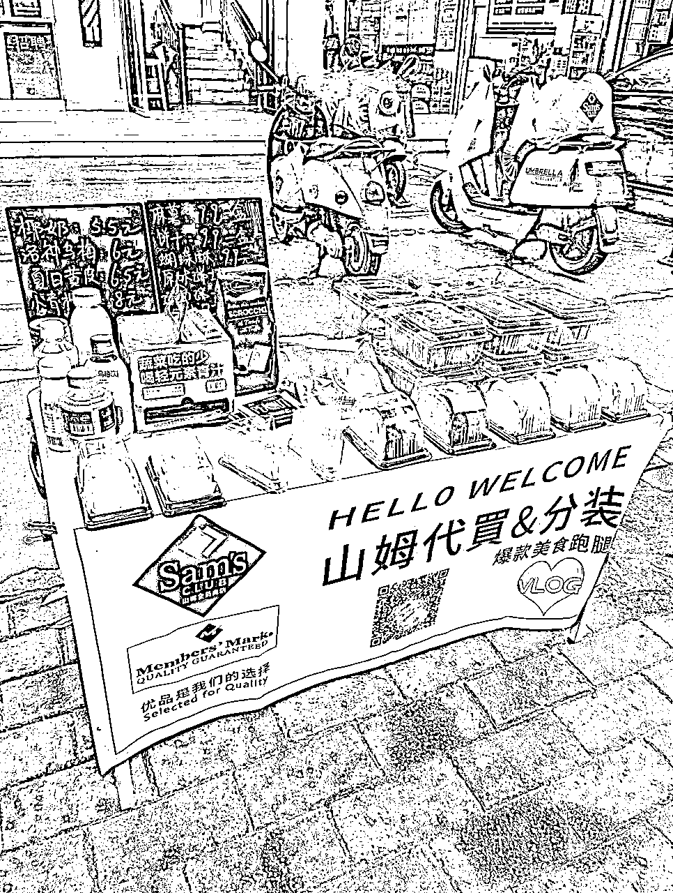
微信接单：
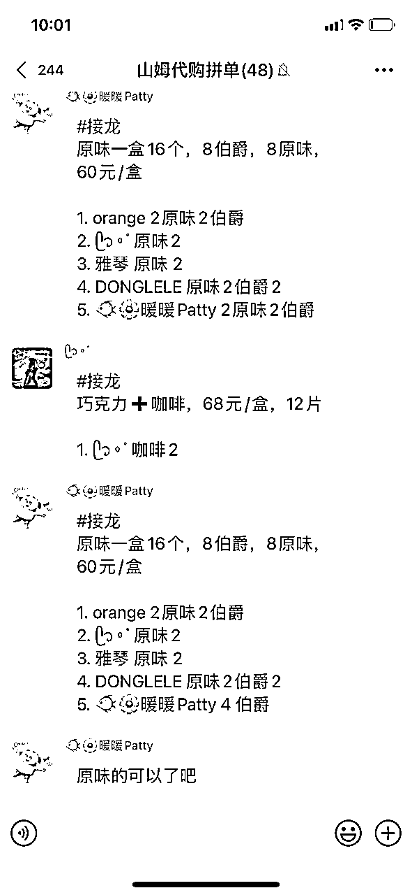
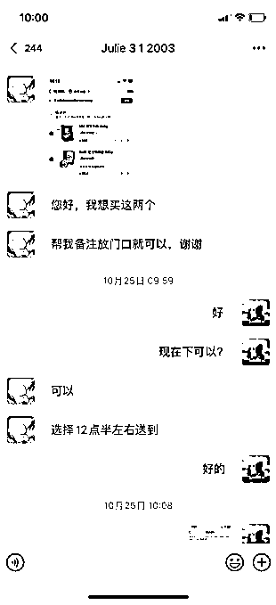
我目前的项目成绩：
最好的时候月收入 4-5k，在维持老客户（300人）情况下，月收益轻松达到1000，收入比较稳定。
能坚持做这么久还有个原因，就是它的复购率非常高，基本这个人在你这成交后，后面还会找你来买。
下面是我经营的小区群客户，单月在快团团上的订单（这只是部分，还有一些是接龙微信转账的），基本上月利润在 1000左右：
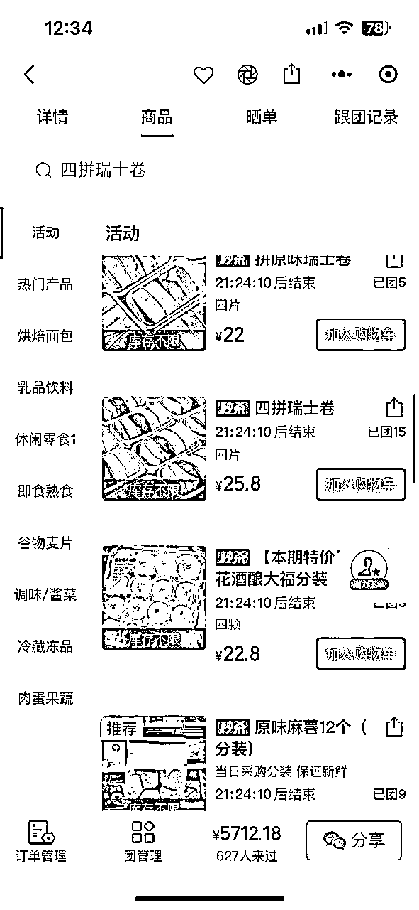
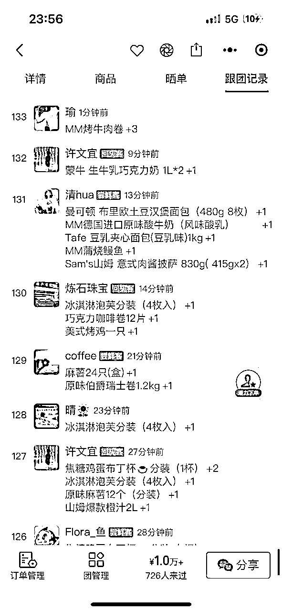
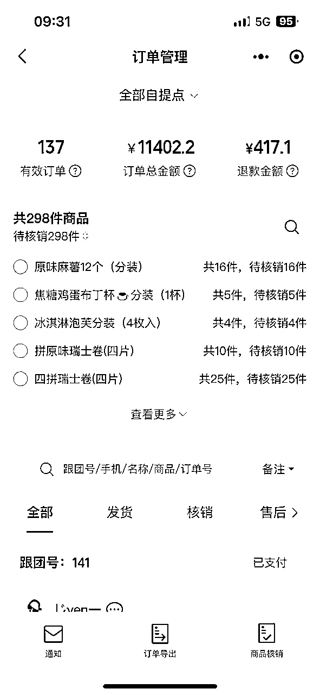
其实小红书上也有很多玩法分享，但比较零散，很多人因为没有掌握完全山姆卡的变现方式，觉得赚不到什么钱，就放弃了。所以今天会比较全面的跟大家分享下这个项目，以及如何长期有稳定收入。如果有遗漏，欢迎评论区交流补充~
以下是我的分享框架：
可能有些圈友对山姆不太熟悉，我先介绍下山姆：
山姆是一个会员制的中高端超市，普通会员年费260元，卓越会员年费680元。有会员卡才能进店购物，里面有免费试吃，很多人会冲着试吃想去体验。热门产品主要是：糕点类、高品质水果、其次是肉类。
超市主要分布在一线、新一线、省会城市，全国一共有二十多个城市有山姆。
可以去线下实体店购物，也可以山姆APP，京东下单配送：
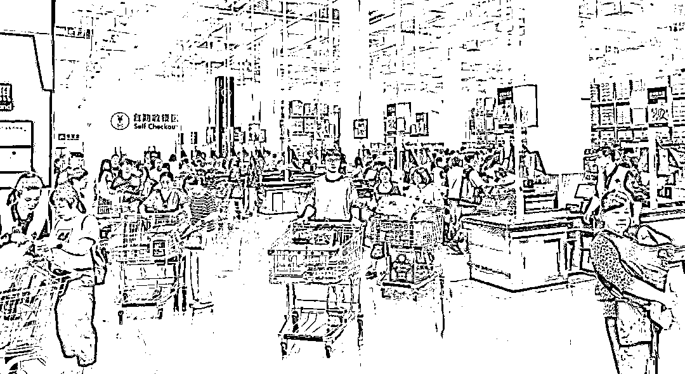
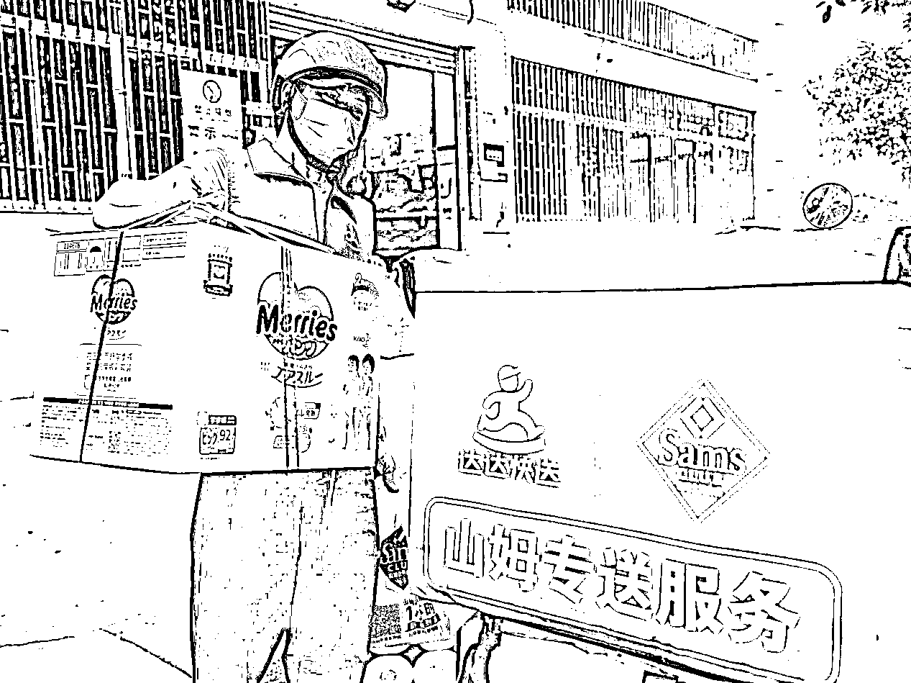
做这个项目需要投入的成本：
除了上面提到的一次性收益来源，代购主要靠这些赚钱：
山姆会员2%返利（副卡消费返利自动计算到主卡）、京东优惠券折现、山姆活动商品抢购、爆火/特价商品加价出售等。具体在后面章节【三、变现方式有哪些】会介绍。
这个项目能做成的关键有几点：
开通山姆会员卡后，除了卖副卡这种一次性收入，还有哪些持续性利润来源：
1、卓越会员2%返利，民生联名信用卡再加2%返利，比如我花了100，官方返2-4块（这个返现可以在山姆APP和实体店购买商品时，直接抵扣使用）
2、因为山姆是沃尔玛旗下的高端品牌，所以山姆是支持用沃尔玛购物卡支付的（类似京东e卡），可以提前去市场上 95折回收沃尔玛购物卡，帮客户代付的时候就可以享 95折。门店，APP，京东到家，线上线下都可以用；
3、开卡后绑定京东上的山姆会员店，每次网购可以免邮费，也是一样可以积分的；
4、如果你有“京东plus会员”，每天会收到赠送的运费券和大额优惠券，不定期也会有店铺优惠券及平台优惠券可以叠加使用。职业做代购的一般都会开京东plus会员，可以去闲鱼买 60左右成本（官方价格100＋）
5、山姆做活动的时候，部分门店可以原价买到茅台（还没买到过，最近好像没有，现在部分城市还有）
6、爆火商品加价出售：车厘子，kt麻将等。
7、特价商品加价出售：山姆还有特价区，可以捡漏，包括换季的时候，商品折扣力度超级大，比如最近很火的泡泡枪，金箍棒，充气独角兽等。
以上最主要的收益来源，是爆火商品、特价商品加价出售。做这行的需要及时掌握这些信息，平常多刷刷小红书闲鱼的同行发布，关注得多就知道得越多。

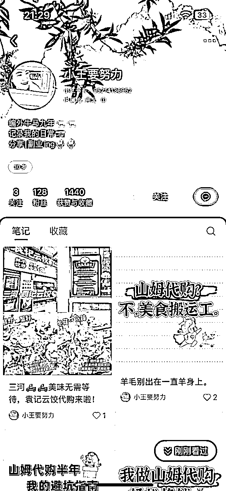
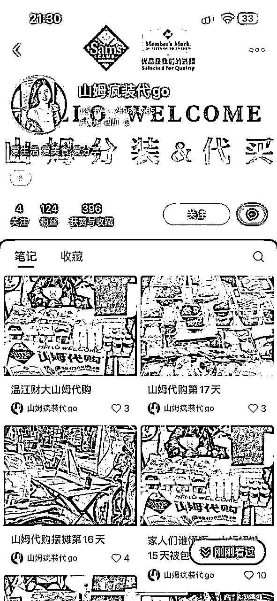
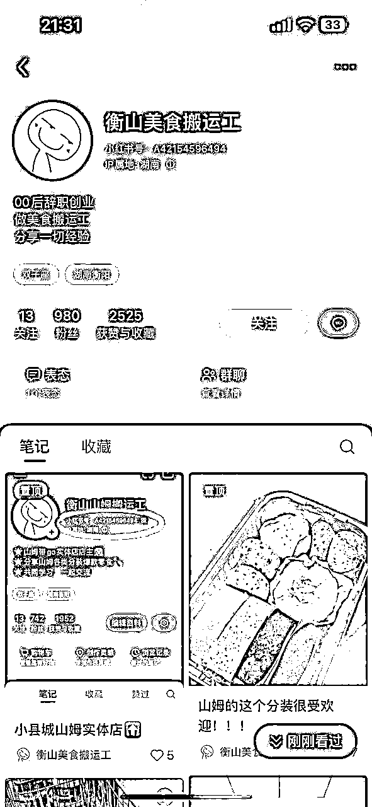
握了以上利润来源，下面我再展开介绍下 4 个主流的长期变现方式：
变现一：摆摊分装（主流）
变现二：小区拼单（主流）
变现三：带人进店（顺便）
变现四：小镇开店（新增）
因为很多小镇没有山姆，但有需求，可以针对这部分需求在小镇开山姆代购店，前期为了节约成本，在自己家做也行，让客户上门提货。
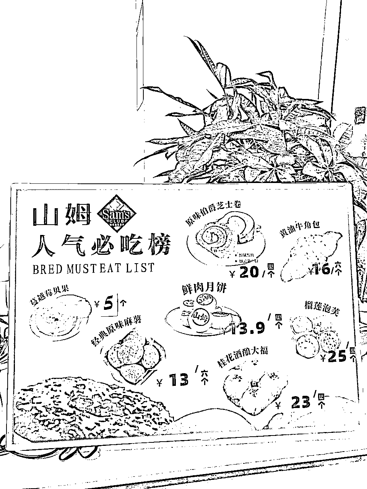

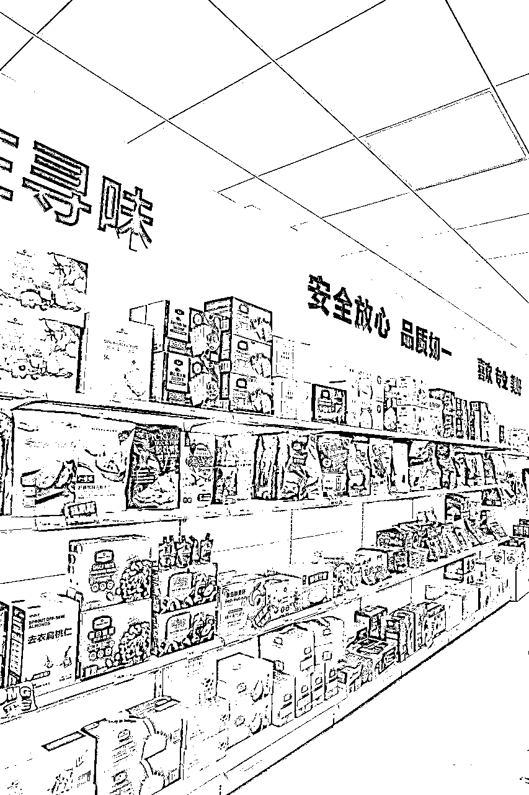

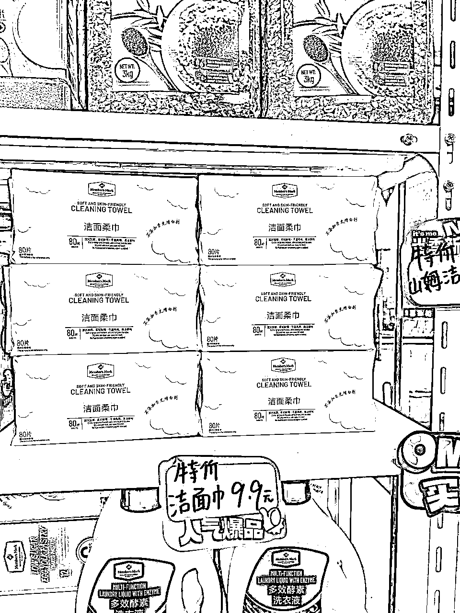
前面其实基本也都提到了，流量主要来自于：
5、直播卖分装
带人进店，自己不进场的，这种今年查的就有点严了，以前截个图给工作人员看下就好了，现在要扫码，可能部分门店不用扫。
带人进店就跟着一起进去就好了，一般一次带5个人左右，没啥问题，多了就分批，或者给他说下，一般问题不大。结账一般要求有点严，通常需要本人，结账出口一般都是餐吧，可以在那边等着就好了。
当然如果能极速达，最好就是极速达代下单最方便安全。
因为项目没什么门槛，很容易被复制，如果组团队做利润没分配好的话，人家立马就单干了。
如果要组团队做也不是不可行，也有同行专门开了家公司，找了一批人做后端社群服务，猜测这种分成70%-80%，稳定性比较强，然后老板去拓展做分装，开网店，直播，外卖等获取流量的业务。
我自己主要是因为主业电商也比较忙，做社群不是强项，这种服务型的交付怕麻烦，也不太擅长跟客户维护关系，所以没有继续投入更多精力放大去做。
这个项目门槛低，有优势也有劣势。利润率比较低，前期可能赚不了多少钱，但赚到第一个一块很简单。在小红书和抖音上，有N多做的很好的前辈，可以直接去借鉴，学习的方式和渠道就很方便了。
项目简单，贵在坚持，每次成交的客户，基本80%都会回购。初期没有方向的，建议从小区周边，以及同城代购入手。
挺适合有点闲暇时间、希望找个事儿做、擅长做社群或写小红书的人去做。擅长做社群，直播类的，坚持做个半年，全身心投入，单人月入过万，问题不大。
或者也可以作为一个引流方式，比如你是做化妆品代购的，你可以通过山姆代购引流，吸引高消费力人群。